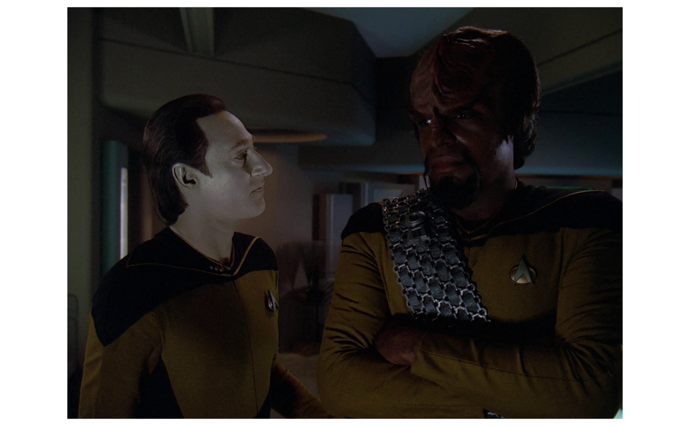

The rtrek package includes some Star Trek datasets, but much more data is available outside the package. You can access other Star Trek data through various APIs.
Technically, there is only one formal API: the Star Trek API (STAPI). rtrek has functions to assist with making calls to this API in order to access specific data. See the STAPI vignette for details.
The focus of this vignette is on accessing data from Memory Alpha. rtrek interfaces with and extracts information from the Memory Alpha and Memory Beta websites. Neither of these sites actually expose an API, but functions in rtrek with querying these websites in an API-like manner. For working with Memory Beta content, see the respective vignette.
Memory Alpha is a website that hosts information on all things relating to official canon Star Trek. This strictly pertains to the television series and movies. There are many other officially licensed Star Trek productions, e.g., the many hundreds of novels, but these are not technically canon even though they are often treated as much by many fans. For a broader, licensed works focus, see Memory Beta.
When talking about using rtrek to access data from Memory Alpha, the term data is used loosely. It would be just as accurate to say information, content or text. While the site contains a vast amount of information, it is not structured in tidy tables like a data scientist would love to conveniently encounter. Memory Alpha is a wiki and can be thought of as similar to an encyclopedia. The bulk of its pages consist of articles. While some of these may have interesting html tables contained within, the site largely offers textual data.
Since Memory Alpha does not offer an API, the API-like interfacing provided by rtrek is just a collection of wrappers around web page scraping. In terms of what the relevant functions bring back from Memory Alpha, there are real limitations on the level of generality and quality of formatting that can be achieved across such a massive and diverse collection of articles.
There are six Memory Alpha web portals available. To see them, call the main function for Memory Alpha access, memory_alpha, and pass it portals as the API endpoint.
memory_alpha("portals")
#> # A tibble: 6 x 2
#> id url
#> <chr> <chr>
#> 1 alternate Portal:Alternate_Reality
#> 2 people Portal:People
#> 3 science Portal:Science
#> 4 series Portal:TV_and_films
#> 5 society Portal:Society_and_Culture
#> 6 technology Portal:TechnologyThe data frame returned provides each portal ID and respective “short URL”. These relative URLs are given in order to reduce verbosity and redundancy. All absolute URLs begin with http://memory-alpha.wikia.com/wiki/.
In this special case where endpoint = "portals", this table is returned from the package itself because it is already known. The available portals are fixed. There is no accessing of Memory Alpha yet. The URLs shown are also not needed by the user, but are provided alongside the IDs for context.
When using a specific portal at the highest level (portal ID only), the returned data frame contains information about searchable categories available in the portal.
memory_alpha("people")
#> # A tibble: 101 x 3
#> id url group
#> <chr> <chr> <chr>
#> 1 Acamarians Category:Acamarians By species
#> 2 Akritirians Category:Akritirians By species
#> 3 Aldeans Category:Aldeans By species
#> 4 Andorians Category:Andorians By species
#> 5 Androids Category:Androids By species
#> 6 Aquans Category:Aquans By species
#> 7 Ardanans Category:Ardanans By species
#> 8 Augments Category:Augments By species
#> 9 Ba'ku Category:Ba%27ku By species
#> 10 Bajorans Category:Bajorans By species
#> # ... with 91 more rowsAgain, there are id and url columns. There is also a group (and potentially a subgroup) column. This is only to provide meaningful context for the values in the id column if relevant for a given portal; group is not used for anything and the user can ignore it.
The above call does involve reaching out to Memory Alpha. While the portals are stable, it is expected that content within is regularly updated. Remember that this is not a real API. Since one is not available, what is really going on behind the scenes is the use of xml2 and rvest for web page harvesting.
Some portals have terminal endpoints - in Memory Alpha these are the written articles - at the top level, but typically the top level results for a portal are categories. You can always differentiate categories from articles by the URL, which will begin with Category: in the former case.
Descending through subcategories is done by appending their id values, separated by a forward slash /.
memory_alpha("people/Klingons")
#> # A tibble: 221 x 2
#> Klingons url
#> <chr> <chr>
#> 1 Memory Alpha images (Klingons) Category:Memory_Alpha_images_(Klingons)
#> 2 Amar (Klingon) Amar_(Klingon)
#> 3 Antaak Antaak
#> 4 A'trom A%27trom
#> 5 Atul Atul
#> 6 Augments Category:Augments
#> 7 Azetbur Azetbur
#> 8 Ba'el Ba%27el
#> 9 Ba'ktor Ba%27ktor
#> 10 Barak-Kadan Barak-Kadan
#> # ... with 211 more rows
memory_alpha("people/Klingons/Worf")
#> # A tibble: 1 x 4
#> title content metadata categories
#> <chr> <list> <list> <list>
#> 1 Worf <xml_ndst> <tibble [1 x 16]> <tibble [11 x 2]>Note the change in the structure of the final output, which is an article. This is the end of this particular road The result is still a data frame, but now has only one row, the article.
The columns include a text title and three nested datasets. content contains an xml_nodeset object left (mostly) unadulterated by memory_alpha. This contains the article’s main content section, including ordered content from a default set of html tags. For more control over article content, see ma_article in the next section. metadata contains a nested data frame of content parsed from the summary card that appears in the top right corner of articles. If this fails to parse for a given article, NULL is returned. categories returns a data frame containing categories in which the article topic falls under and their respective URLs.
If you already know the article id, You can obtain an article directly using ma_article instead of going through an endpoint with memory_alpha that terminates in the same id. This also offers additional options to control what tags are included in the returned result and whether that result is the original xml_nodeset object or a character vector of only the extracted text. In either case, work is left to the user to do what they intend such as text analysis.
worf <- ma_article("Worf", content_format = "character", content_nodes = c("h2", "h3"))
worf
#> # A tibble: 1 x 4
#> title content metadata categories
#> <chr> <list> <list> <list>
#> 1 Worf <chr [38]> <tibble [1 x 16]> <tibble [11 x 2]>
worf$content[[1]] # Worf article section headings
#> [1] "Early life"
#> [2] "The Rozhenkos"
#> [3] "Coming of age"
#> [4] "Service aboard the USS Enterprise-D"
#> [5] "Borg encounters"
#> [6] "Q encounters"
#> [7] "Klingon affairs"
#> [8] "Other notable missions"
#> [9] "Service on Deep Space 9"
#> [10] "USS Defiant missions"
#> [11] "The Dominion War"
#> [12] "Service aboard the USS Enterprise-E"
#> [13] "Personality"
#> [14] "Physicality"
#> [15] "As a warrior"
#> [16] "Ailments and injuries"
#> [17] "Family"
#> [18] "K'Ehleyr"
#> [19] "Alexander"
#> [20] "Jeremy Aster"
#> [21] "Jadzia Dax"
#> [22] "Kurn"
#> [23] "Nikolai Rozhenko"
#> [24] "Martok"
#> [25] "Friendships"
#> [26] "The crew of the Enterprise"
#> [27] "Deep Space 9 companions"
#> [28] "Kor"
#> [29] "Alternate realities and timelines"
#> [30] "Holograms"
#> [31] "Memorable quotes"
#> [32] "Chronology"
#> [33] "Appendices"
#> [34] "Appearances"
#> [35] "Background information"
#> [36] "Apocrypha"
#> [37] "See also"
#> [38] "External links"If browse = TRUE the article page also launches in the browser.
Full resolution source images can be downloaded and imported into R using ma_image if you know the short URL. The easiest way to find URLs is by using a Memory Alpha portal. In the example below, the Memory Alpha images category under Klingons is selected. Look for a picture that includes Worf but also Data. Since the category column name is so long, use the url column; it’s almost the same.
library(dplyr)
klingons <- memory_alpha("people/Klingons/Memory Alpha images (Klingons)")
klingons
#> # A tibble: 1,208 x 2
#> `Memory Alpha images (Klingons)` url
#> <chr> <chr>
#> 1 23rd century Klingons.jpg File:23rd_century_Klingons.jpg
#> 2 Age of ascension pain sticks.jpg File:Age_of_ascension_pain_sticks.jpg
#> 3 Ajilon Prime Klingon 1.jpg File:Ajilon_Prime_Klingon_1.jpg
#> 4 Ajilon Prime Klingon 2.jpg File:Ajilon_Prime_Klingon_2.jpg
#> 5 Ajilon Prime Klingons.jpg File:Ajilon_Prime_Klingons.jpg
#> 6 Alexander and K'mtar.jpg File:Alexander_and_K%27mtar.jpg
#> 7 Alexander at the kot'baval festiv~ File:Alexander_at_the_kot%27baval_fe~
#> 8 Alexander Rozhenko, 2367.jpg File:Alexander_Rozhenko,_2367.jpg
#> 9 Alexander Rozhenko, 2370.jpg File:Alexander_Rozhenko,_2370.jpg
#> 10 Alexander Rozhenko, 2374.jpg File:Alexander_Rozhenko,_2374.jpg
#> # ... with 1,198 more rows
worf_data <- filter(klingons, grepl("Worf", url) & grepl("Data", url))
worf_data
#> # A tibble: 5 x 2
#> `Memory Alpha images (Klingons)` url
#> <chr> <chr>
#> 1 Data tries talking to Worf.jpg File:Data_tries_talking_to_Worf.jpg
#> 2 Data, Picard and Worf, 2375.jpg File:Data,_Picard_and_Worf,_2375.j~
#> 3 La Forge, Data, Riker, Worf, and Pic~ File:La_Forge,_Data,_Riker,_Worf,_~
#> 4 Picard Data and Worf on Iconia.jpg File:Picard_Data_and_Worf_on_Iconi~
#> 5 Worf carries Data through portal.jpg File:Worf_carries_Data_through_por~Qapla’! This provides several results.
Note that you can use the full memory_alpha API endpoint string on this terminal page, treating it like an article (i.e., not a category page). There is not much to return other than perhaps the category entries attached to the image. A simpler option is to use the short URL with ma_article to achieve the same result.
x <- memory_alpha("people/Klingons/Memory Alpha images (Klingons)/Data tries talking to Worf.jpg")
x
#> # A tibble: 1 x 4
#> title content metadata categories
#> <chr> <list> <list> <list>
#> 1 Data tries talking to Worf.jpg <xml_ndst> <NULL> <tibble [4 x 2]>
x <- ma_article("File:Data_tries_talking_to_Worf.jpg")
x
#> # A tibble: 1 x 4
#> title content metadata categories
#> <chr> <list> <list> <list>
#> 1 Data tries talking to Worf.jpg <xml_ndst> <NULL> <tibble [4 x 2]>
x$categories
#> [[1]]
#> # A tibble: 4 x 2
#> categories url
#> <chr> <chr>
#> 1 Memory Alpha remastered files by pro~ Category:Memory_Alpha_remastered_f~
#> 2 Memory Alpha fair use images Category:Memory_Alpha_fair_use_ima~
#> 3 Memory Alpha images (Androids) Category:Memory_Alpha_images_(Andr~
#> 4 Memory Alpha images (Klingons) Category:Memory_Alpha_images_(Klin~Of course, the likely intent is to obtain the image file itself when working with image file “article” pages. Use ma_image for this. It returns a ggplot object of the downloaded image file.

ma_image can take the additional arguments, keep = TRUE to retain the downloaded image file, and file to specify the output filename if you do not want it to be derived from the short URL. If you need more control over the plot, set keep = TRUE and then load the image file into R directly to plot separately as needed.
You can perform a Memory Alpha site search using ma_search. This returns a data frame of search results content, including title, truncated text preview, and short URL for the first page of search results.
It does not recursively collate search results through subsequent pages of results. There could be an unexpectedly high number of pages of results depending on the search query. Since the general nature of this search feature seems relatively casual anyway, it aims only to provide a first page preview. As with ma_article, setting browse = TRUE opens the page in the browser.
ma_search("Guinan")
#> # A tibble: 25 x 3
#> title text url
#> <chr> <chr> <chr>
#> 1 Guinan https://memory-alpha.fandom.com/wi~ Guinan
#> 2 Francis Guinan https://memory-alpha.fandom.com/wi~ Francis_Guinan
#> 3 Unnamed individua~ https://memory-alpha.fandom.com/wi~ Unnamed_individu~
#> 4 Unnamed El-Aurians https://memory-alpha.fandom.com/wi~ Unnamed_El-Auria~
#> 5 Jean-Luc Picard https://memory-alpha.fandom.com/wi~ Jean-Luc_Picard
#> 6 Alexander Rozhenko https://memory-alpha.fandom.com/wi~ Alexander_Rozhen~
#> 7 Borg https://memory-alpha.fandom.com/wi~ Borg
#> 8 Starfleet https://memory-alpha.fandom.com/wi~ Starfleet
#> 9 Wesley Crusher https://memory-alpha.fandom.com/wi~ Wesley_Crusher
#> 10 Data https://memory-alpha.fandom.com/wi~ Data
#> # ... with 15 more rowsMemory Alpha contains almost 50,000 pages at the time of this rtrek version. It is possible that some articles may have idiosyncratic structure that could make them inaccessible by these rtrek functions.
Since this package version is also the first to offer this brand new functionality - and as mentioned, Memory Alpha does not offer an API, leading to a less reliable web-scraping approach, it is unknown what the likelihood is at this time of breaking changes occurring during updates to Memory Alpha by its maintainers.
Jolan Tru.